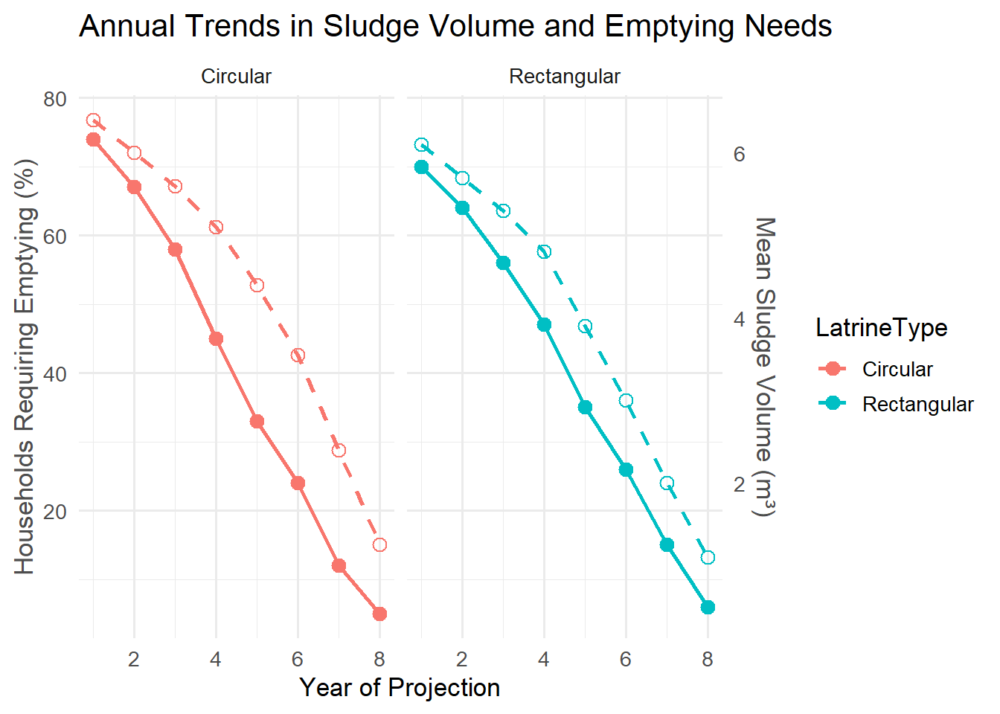

Estimation of Sludge Accumulation and Emptying Needs in On-Site Sanitation Systems: A Predictive Modelling Approach
Background
Urban areas in low- and middle-income countries rely heavily on on-site sanitation systems such as pit latrines. As cities expand, managing faecal sludge becomes a key challenge for urban authorities.
This study quantified sludge volumes from sampled pits and modelled the rates of filling and emptying needs over time. Understanding how much sludge accumulates each year is essential for planning collection and treatment capacity at city level.
Goal
To estimate the yearly sludge volumes requiring emptying over an 8-year projection period, comparing pits of circular and rectangular shapes.
Methods
Two datasets were collected in parallel:
Field measurements: Sludge depth and pit dimensions were used to calculate total and remaining pit volumes.
Household survey: Gathered demographic data including household size and toilet usage frequency.
The sludge accumulation rate was modelled based on the remaining pit space (0.5 m below the drop hole), using literature-based estimates of faecal sludge generation.
Yearly volumes requiring emptying were simulated for 8 years under both pit shapes:
Circular pits: 𝑉 = 𝜋 𝑟 2 ℎ V=πr 2 h
Rectangular pits: 𝑉 = 𝑙 × 𝑤 × ℎ V=l×w×h
Modelled data were visualised using R’s ggplot2, showing the decline in emptying needs as pits reach capacity (Figure 1)
Interpretation
The dual-axis plot shows that as years progress, both sludge volume and the proportion of pits requiring emptying decrease steadily.
Circular pits initially produced slightly higher volumes, but the difference between pit types diminished over time.The pattern indicates that annual emptying programmes reduce long-term accumulation, allowing cities to plan realistic treatment capacity.
The decline is gradual, not abrupt, suggesting consistent maintenance rather than one-time emptying.
One key limitation is that the projections did not include future population growth as estimated by the National Statistics Office, which may increase total sludge volume in subsequent years.